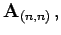

Aussagen zum Rang von Matrizen
- 1. Matrix vom Typ A(m,n):
- Da im Vektorraum der Dimension m mehr als m Zeilenvektoren oder Spaltenvektoren der Dimension m linear abhängig sind (s. lineare Unabhängigkeit), ist der Rang r in einer Matrix
 vom Typ (m,n) höchstens gleich der kleineren der Zahlen m und n:
vom Typ (m,n) höchstens gleich der kleineren der Zahlen m und n:
- 2. Reguläre Matrix:
- Eine quadratische Matrix vom Typ (n,n) heißt eine reguläre Matrix, wenn ihr Rang gleich n ist. Das ist genau dann der Fall, wenn ihre Determinante von Null verschieden ist (s. Nullwerden einer Determinante). Für den Rang einer regulären quadratischen Matrix  d.h. gilt
- 3. Singuläre Matrix:
- Eine quadratische Matrix vom Typ (n,n) heißt eine singuläre Matrix, wenn ihr Rang gleich 0 ist. Das ist genau dann der Fall, wenn ihre Determinante verschwindet (s. Nullwerden einer Determinante). Für den Rang einer singulären quadratischen Matrix
 , d.h. gilt
, d.h. gilt
- 4. Nullmatrix:
- Der Rang der Nullmatrix
 ist
ist